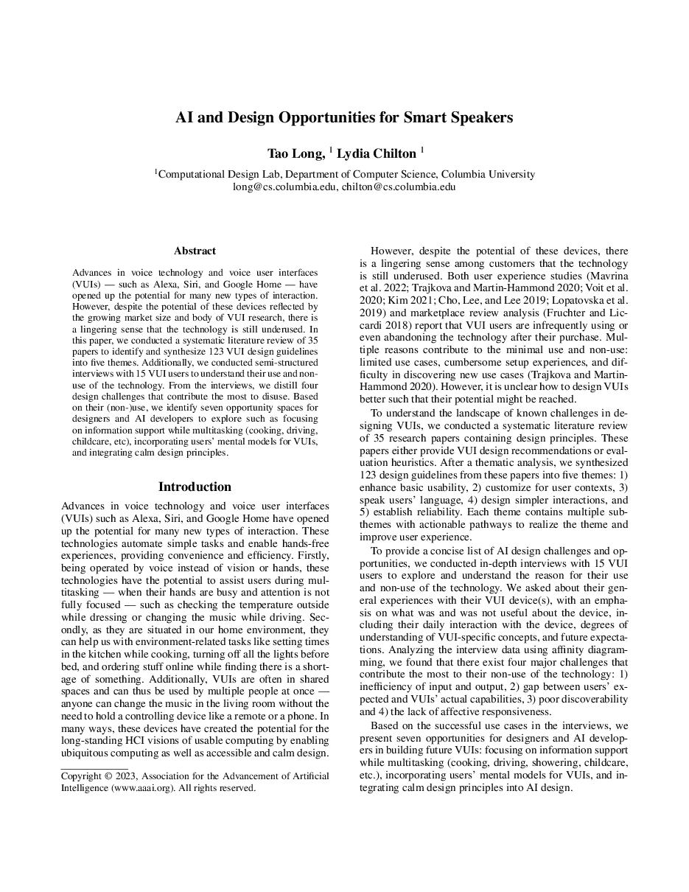
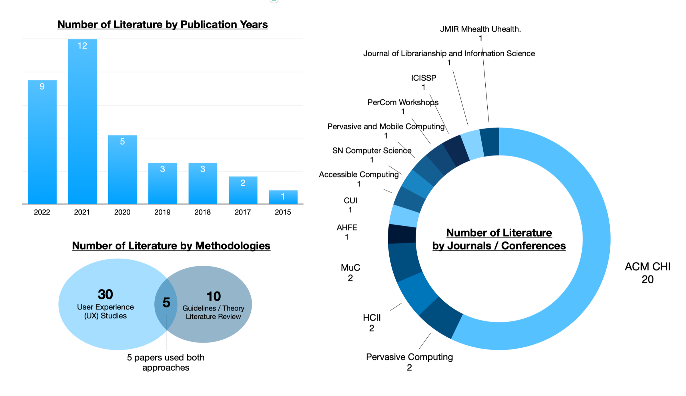
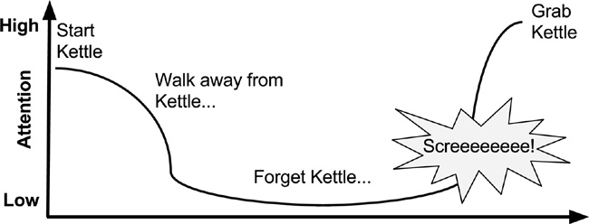
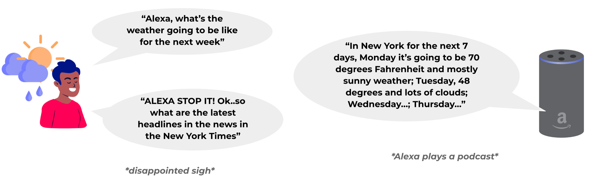
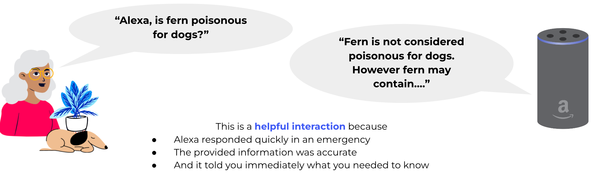

Challenges and Opportunities forthe Design of Smart Speakers
Columbia University
AAAI Workshop 2023

Voice assistants are everywhere, yet still underused.
— A literature review and 15 interviews reveal why, and where designers can go next.
1/ What the Literature Says
Despite a growing market and body of VUI research, smart speakers still feel underused. We reviewed 35 papers and synthesized 127 design guidelines into five themes.


Summary
Guidelines emphasize error prevention and control, context, natural language, shorter and simpler conversations, and trust.
2/ Why Users Stop Using Them
We interviewed 15 smart speaker users about their use and non-use, and distilled four design challenges that contribute most to non-use.

Summary
Unmatched expectations for efficiency and capability lead to frustration, self-blame, and eventually abandonment.
3/ Opportunities for Designers
Based on how people do and do not use their speakers, we identify four opportunity spaces.

Takeaways
- Design for multitasking and information support.
- Build on users' mental models of smart speakers.
- Integrate calm design principles so the device supports rather than demands attention.
BibTeX
If this work is useful to you, here is a citation you can copy.
@misc{long2023challengesopportunitiesdesignsmart,
title={Challenges and Opportunities for the Design of Smart Speakers},
author={Tao Long and Lydia B. Chilton},
year={2023},
eprint={2306.05741},
archivePrefix={arXiv},
primaryClass={cs.HC},
url={https://arxiv.org/abs/2306.05741},
}